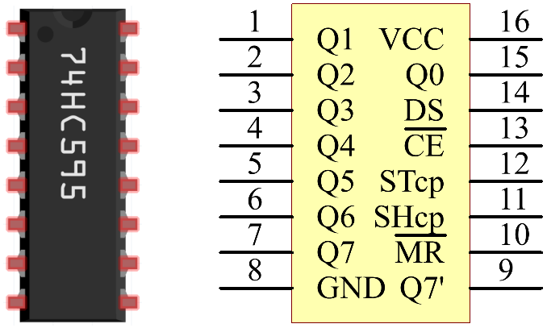

Nota
Hola, ¡bienvenido a la Comunidad de Entusiastas de SunFounder para Raspberry Pi, Arduino y ESP32 en Facebook! Profundiza en el mundo de Raspberry Pi, Arduino y ESP32 junto a otros entusiastas.
¿Por qué unirse?
Soporte Experto: Resuelve problemas post-venta y desafíos técnicos con la ayuda de nuestra comunidad y equipo.
Aprende y Comparte: Intercambia consejos y tutoriales para mejorar tus habilidades.
Previsualizaciones Exclusivas: Accede anticipadamente a los anuncios de nuevos productos y adelantos.
Descuentos Especiales: Disfruta de descuentos exclusivos en nuestros productos más recientes.
Promociones y Sorteos Festivos: Participa en sorteos y promociones especiales en días festivos.
👉 ¿Listo para explorar y crear con nosotros? Haz clic en [Aquí] y únete hoy mismo.
1.1.4 Pantalla de 7 segmentos
Introducción
Intentemos controlar una pantalla de 7 segmentos para mostrar números del 0 al 9 y letras de la A a la F.
Componentes

Principio
Pantalla de 7 segmentos
Una pantalla de 7 segmentos es un componente en forma de «8» que contiene 7 LEDs. Cada LED se llama segmento, y cuando se energiza, un segmento forma parte de un número a mostrar.
Existen dos tipos de conexión de pines: Cátodo Común (CC) y Ánodo Común (CA). Como su nombre indica, una pantalla CC tiene todos los cátodos de los 7 LEDs conectados, mientras que una pantalla CA tiene todos los ánodos de los 7 segmentos conectados. En este kit, usamos la primera opción.

Cada uno de los LEDs en la pantalla tiene un segmento posicional con uno de sus pines de conexión hacia afuera en el paquete de plástico rectangular. Estos pines están etiquetados de «a» a «g» representando cada LED individual. Los otros pines están conectados formando un pin común. Al polarizar hacia adelante los pines apropiados en un orden específico, algunos segmentos se iluminan mientras otros permanecen apagados, mostrando así el carácter correspondiente en la pantalla.
Códigos de visualización
Para ayudarte a comprender cómo las pantallas de 7 segmentos (Cátodo Común) muestran números, hemos elaborado la siguiente tabla. En ella, se muestran los números del 0 al F en la pantalla, (DP) GFEDCBA se refiere a cada LED configurado en 0 o 1. Por ejemplo, 00111111 significa que DP y G están configurados en 0, mientras que los demás están en 1. Esto muestra el número 0 en la pantalla de 7 segmentos, mientras que el Código HEX corresponde a un número hexadecimal.

74HC595
El 74HC595 consiste en un registro de desplazamiento de 8 bits y un registro de almacenamiento con salidas paralelas de tres estados. Convierte la entrada en serie en salida en paralelo, lo que permite ahorrar puertos de E/S de un MCU.
Cuando MR (pin10) está en nivel alto y OE (pin13) en nivel bajo, los datos se introducen en el flanco ascendente de SHcp y pasan al registro de memoria a través del flanco ascendente de SHcp. Si los dos relojes están conectados, el registro de desplazamiento siempre está un pulso por delante del registro de memoria. Hay un pin de entrada de desplazamiento en serie (Ds), un pin de salida en serie (Q) y un botón de reinicio asíncrono (nivel bajo) en el registro de memoria. El registro de memoria emite un bus con 8 bits en paralelo y en tres estados. Cuando OE está habilitado (nivel bajo), los datos en el registro de memoria se envían al bus.
{kind=link}
Pines del 74HC595 y sus funciones:
Q0-Q7: Pines de salida de datos en paralelo de 8 bits, capaces de controlar directamente 8 LEDs o 8 pines de la pantalla de 7 segmentos.
Q7’: Pin de salida en serie, conectado a DS de otro 74HC595 para conectar múltiples 74HC595 en serie.
MR: Pin de reinicio, activo en nivel bajo;
SHcp: Entrada de secuencia de tiempo del registro de desplazamiento. En el flanco ascendente, los datos en el registro de desplazamiento avanzan un bit sucesivamente, es decir, los datos en Q1 pasan a Q2, y así sucesivamente. Mientras que en el flanco descendente, los datos en el registro de desplazamiento permanecen sin cambios.
STcp: Entrada de secuencia de tiempo del registro de almacenamiento. En el flanco ascendente, los datos en el registro de desplazamiento pasan al registro de memoria.
CE: Pin de habilitación de salida, activo en nivel bajo.
DS: Pin de entrada de datos en serie
VCC: Voltaje de alimentación positivo
GND: Tierra
Diagrama Esquemático
Conecta el pin ST_CP del 74HC595 al GPIO18 de la Raspberry Pi, SH_CP al GPIO27, DS al GPIO17, y los puertos de salida en paralelo a los 8 segmentos de la pantalla LED. Introduce datos en el pin DS para el registro de desplazamiento cuando SH_CP (entrada de reloj del registro de desplazamiento) esté en el flanco ascendente, y al registro de memoria cuando ST_CP (entrada de reloj de la memoria) esté en el flanco ascendente. Luego, puedes controlar los estados de SH_CP y ST_CP a través de los GPIOs de la Raspberry Pi para transformar la entrada de datos en serie en salida de datos en paralelo, permitiendo así ahorrar GPIOs en la Raspberry Pi y manejar la pantalla.
T-Board Name |
physical |
wiringPi |
BCM |
GPIO17 |
Pin 11 |
0 |
17 |
GPIO18 |
Pin 12 |
1 |
18 |
GPIO27 |
Pin 13 |
2 |
27 |
{kind=link}
Procedimientos Experimentales
Paso 1: Monta el circuito.

Para Usuarios del Lenguaje C
Paso 2: Accede a la carpeta del código.
cd ~/davinci-kit-for-raspberry-pi/c/1.1.4/
Paso 3: Compila.
gcc 1.1.4_7-Segment.c -lwiringPi
Paso 4: Ejecuta el archivo ejecutable anterior.
sudo ./a.out
Después de ejecutar el código, verás la pantalla de 7 segmentos mostrar los números del 0 al 9 y las letras de la A a la F.
Nota
Si no funciona después de ejecutar el código, o aparece un mensaje de error: "wiringPi.h: No such file or directory", consulta c code is not working?.
Código
#include <wiringPi.h>
#include <stdio.h>
#define SDI 0 //entrada de datos en serie
#define RCLK 1 //entrada de reloj de memoria (STCP)
#define SRCLK 2 //entrada de reloj del registro de desplazamiento (SHCP)
unsigned char SegCode[16] = {0x3f,0x06,0x5b,0x4f,0x66,0x6d,0x7d,0x07,0x7f,0x6f,0x77,0x7c,0x39,0x5e,0x79,0x71};
void init(void){
pinMode(SDI, OUTPUT);
pinMode(RCLK, OUTPUT);
pinMode(SRCLK, OUTPUT);
digitalWrite(SDI, 0);
digitalWrite(RCLK, 0);
digitalWrite(SRCLK, 0);
}
void hc595_shift(unsigned char dat){
int i;
for(i=0;i<8;i++){
digitalWrite(SDI, 0x80 & (dat << i));
digitalWrite(SRCLK, 1);
delay(1);
digitalWrite(SRCLK, 0);
}
digitalWrite(RCLK, 1);
delay(1);
digitalWrite(RCLK, 0);
}
int main(void){
int i;
if(wiringPiSetup() == -1){ //si falla la inicialización de wiring, imprimir mensaje en pantalla
printf("setup wiringPi failed !");
return 1;
}
init();
while(1){
for(i=0;i<16;i++){
printf("Print %1X on Segment\n", i); // %X significa salida hexadecimal
hc595_shift(SegCode[i]);
delay(500);
}
}
return 0;
}
Explicación del Código
unsigned char SegCode[16] = {0x3f,0x06,0x5b,0x4f,0x66,0x6d,0x7d,0x07,0x7f,0x6f,0x77,0x7c,0x39,0x5e,0x79,0x71}; Un array de códigos de segmentos desde 0 a F en hexadecimal (cátodo común).
void init(void){
pinMode(SDI, OUTPUT);
pinMode(RCLK, OUTPUT);
pinMode(SRCLK, OUTPUT);
digitalWrite(SDI, 0);
digitalWrite(RCLK, 0);
digitalWrite(SRCLK, 0);
}
Configura los pines DS, ST_CP y SH_CP como SALIDA, y el estado inicial en 0. void hc595_shift(unsigned char dat){} Asigna un valor de 8 bits al registro de desplazamiento del 74HC595.
digitalWrite(SDI, 0x80 & (dat << i));
Asigna el dato dat a SDI (DS) por bits. Suponiendo que dat=0x3f (0011 1111), cuando i=2, 0x3f se desplaza a la izquierda (<<) 2 bits. 1111 1100 (0x3f << 2) & 1000 0000 (0x80) = 1000 0000, lo cual es verdadero.
digitalWrite(SRCLK, 1);
El valor inicial de SRCLK se estableció en 0, y aquí se configura en 1, lo que genera un pulso ascendente, desplazando el dato DS al registro de desplazamiento.
digitalWrite(RCLK, 1);
El valor inicial de RCLK se configuró en 0, y aquí se configura en 1, generando un flanco ascendente, transfiriendo los datos del registro de desplazamiento al registro de almacenamiento.
while(1){
for(i=0;i<16;i++){
printf("Print %1X on Segment\n", i); // %X significa salida hexadecimal
hc595_shift(SegCode[i]);
delay(500);
}
}
En este bucle for, usamos "%1X" para mostrar i como un número hexadecimal. Aplicamos i para encontrar el código de segmento correspondiente en el array SegCode[], y empleamos hc595_shift() para pasar el código de SegCode al registro de desplazamiento del 74HC595.
Para Usuarios del Lenguaje Python
Paso 2: Accede a la carpeta del código.
cd ~/davinci-kit-for-raspberry-pi/python/
Paso 3: Ejecuta.
sudo python3 1.1.4_7-Segment.py
Después de ejecutar el código, verás que la pantalla de 7 segmentos muestra los números del 0 al 9 y las letras de la A a la F.
Código
Nota
Puedes Modificar/Restablecer/Copiar/Ejecutar/Detener el código a continuación. Pero antes de eso, debes dirigirte a la ruta del código fuente como davinci-kit-for-raspberry-pi/python.
import RPi.GPIO as GPIO
import time
# Configuración de pines
SDI = 17
RCLK = 18
SRCLK = 27
# Definir el código de segmento de 0 a F en hexadecimal
# Cátodo común
segCode = [0x3f,0x06,0x5b,0x4f,0x66,0x6d,0x7d,0x07,0x7f,0x6f,0x77,0x7c,0x39,0x5e,0x79,0x71]
def setup():
GPIO.setmode(GPIO.BCM)
GPIO.setup(SDI, GPIO.OUT, initial=GPIO.LOW)
GPIO.setup(RCLK, GPIO.OUT, initial=GPIO.LOW)
GPIO.setup(SRCLK, GPIO.OUT, initial=GPIO.LOW)
# Transferir los datos a 74HC595
def hc595_shift(dat):
for bit in range(0, 8):
GPIO.output(SDI, 0x80 & (dat << bit))
GPIO.output(SRCLK, GPIO.HIGH)
time.sleep(0.001)
GPIO.output(SRCLK, GPIO.LOW)
GPIO.output(RCLK, GPIO.HIGH)
time.sleep(0.001)
GPIO.output(RCLK, GPIO.LOW)
def main():
while True:
# Transferir el código uno a uno desde la lista segCode
for code in segCode:
hc595_shift(code)
print ("segCode[%s]: 0x%02X"%(segCode.index(code), code)) # %02X means double digit HEX to print
time.sleep(0.5)
def destroy():
GPIO.cleanup()
if __name__ == '__main__':
setup()
try:
main()
except KeyboardInterrupt:
destroy()
Explicación del Código
segCode = [0x3f,0x06,0x5b,0x4f,0x66,0x6d,0x7d,0x07,0x7f,0x6f,0x77,0x7c,0x39,0x5e,0x79,0x71]
Un array de códigos de segmento desde 0 a F en hexadecimal (cátodo común).
def setup():
GPIO.setmode(GPIO.BCM)
GPIO.setup(SDI, GPIO.OUT, initial=GPIO.LOW)
GPIO.setup(RCLK, GPIO.OUT, initial=GPIO.LOW)
GPIO.setup(SRCLK, GPIO.OUT, initial=GPIO.LOW)
Configura los pines ds, st_cp, sh_cp como salida y el estado inicial como bajo.
GPIO.output(SDI, 0x80 & (dat << bit))
Asigna los datos de dat a SDI(DS) por bits. Suponiendo que dat=0x3f (0011 1111), cuando bit=2, 0x3f se desplazará a la derecha (<<) 2 bits. 1111 1100 (0x3f << 2) & 1000 0000 (0x80) = 1000 0000, es verdadero.
GPIO.output(SRCLK, GPIO.HIGH)
El valor inicial de SRCLK se estableció en LOW, y aquí se configura en HIGH para generar un pulso ascendente, luego desplazar el dato de DS al registro de desplazamiento.
GPIO.output(RCLK, GPIO.HIGH)
El valor inicial de RCLK se estableció en LOW, y aquí se configura en HIGH, lo que genera un flanco ascendente, luego transfiere los datos del registro de desplazamiento al registro de almacenamiento.
Nota
El formato hexadecimal de los números 0~15 son (0, 1, 2, 3, 4, 5, 6, 7, 8, 9, A, B, C, D, E, F)
Imagen del Fenómeno